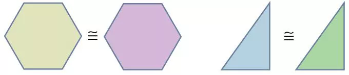
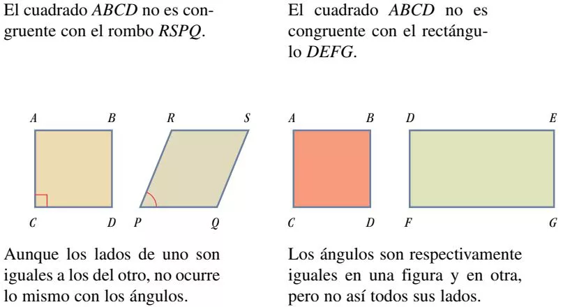
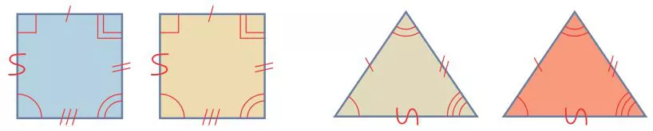
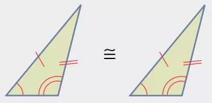
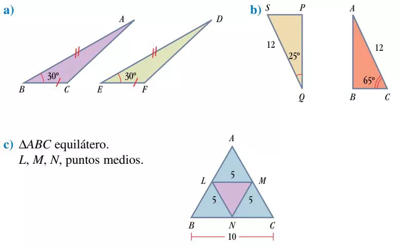
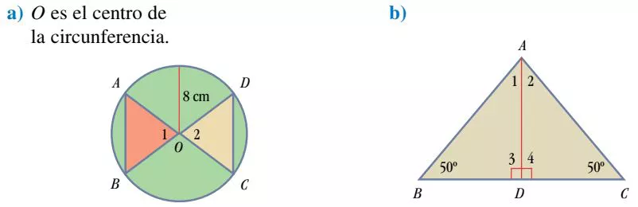

Recuerda. Dos segmentos o dos ángulos son iguales cuando tienen la misma medida.
Dos figuras son iguales o congruentes (≅) cuando ambas tienen la misma forma y el mismo tamaño. En términos geométricos, esto significa que las figuras tienen respectivamente iguales sus lados y sus ángulos.

Así, para determinar si dos figuras son iguales, hay que comparar todos los lados y ángulos de una, con todos los lados y ángulos de la otra.

Cuando dos figuras son congruentes, los lados y los ángulos que se corresponden se llaman homólogos y se identifican con marcas iguales. Así:

Estrictamente hablando, en matemáticas dos objetos son iguales sólo cuando son el mismo objeto. Por eso, de dos objetos distintos, con medidas iguales, se dice que son congruentes.
Congruencia de triángulosA dos triángulos que tienen respectivamente iguales sus tres lados y sus tres ángulos se les denomina congruentes (≅).

Para determinar la congruencia entre dos triángulos no es necesario verificar la igualdad de sus seis elementos, basta con verificar tres.
Criterios de congruencia para triángulosDos triángulos son iguales o congruentes cuando tienen respectivamente iguales cualquiera de los tres elementos siguientes:
Criterio LLL. Tres lados.
Criterio LAL. Dos lados y el ángulo entre ellos.
Criterio ALA. Dos ángulos y el lado entre ellos.
Ejemplo 1. Comparando triángulos mediante igualdades.
Las marcas iguales señalan elementos iguales. Explica por qué los triángulos son congruentes. Encuentra los lados y los ángulos homólogos restantes.

Solución
a) Por LAL: AB = DE, ∠B = ∠E y BC = EF. Los elementos homólogos restantes, que resultan iguales, son: AC = DF, ∠A = ∠D y ∠C = ∠F.
b) Por ALA: El lado que mide 12 en ambos triángulos está comprendido entre ángulos de 25° y 65°. De aquí: SP = BC, SQ = AC, y ∠S = ∠C.
c) Por LLL: Los cuatro triángulos tienen los tres lados respectivamente iguales. En este caso, todos los lados y ángulos resultan ser homólogos.
Ejemplo 2. Comprobando congruencias.
A partir de los datos, establece la congruencia de los triángulos mostrados

Solución
a) \(\Delta\)ABO ≅ \(\Delta\)DCO por LAL: AO = OC y BO = OD, miden 8 cm por ser radios de la circunferencia, y ∠1 = ∠2 por ser opuestos por el vértice.
b) \(\Delta\)ABD ≅ \(\Delta\)ACD por ALA: ∠3 = ∠4 por ser rectos; AD = AD por ser lado común, y ∠1 = ∠2 porque el tercer ángulo de cada triángulo mide 40°.